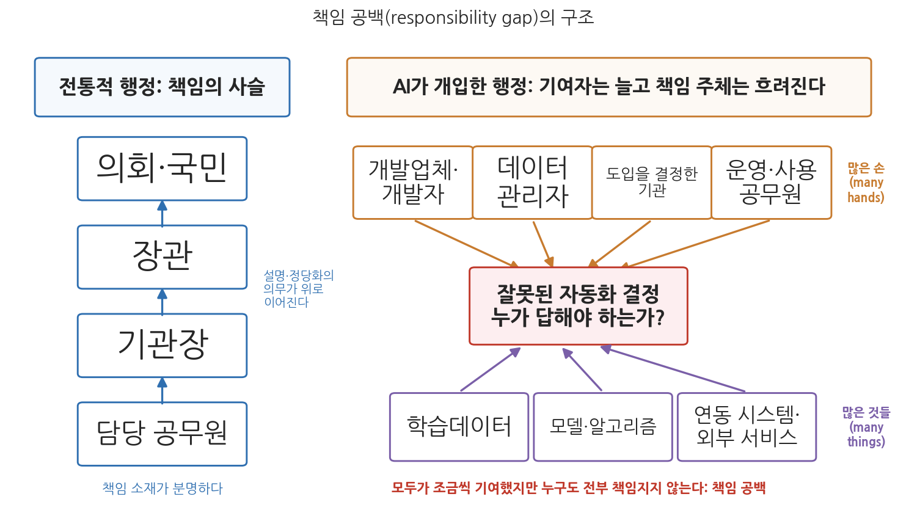
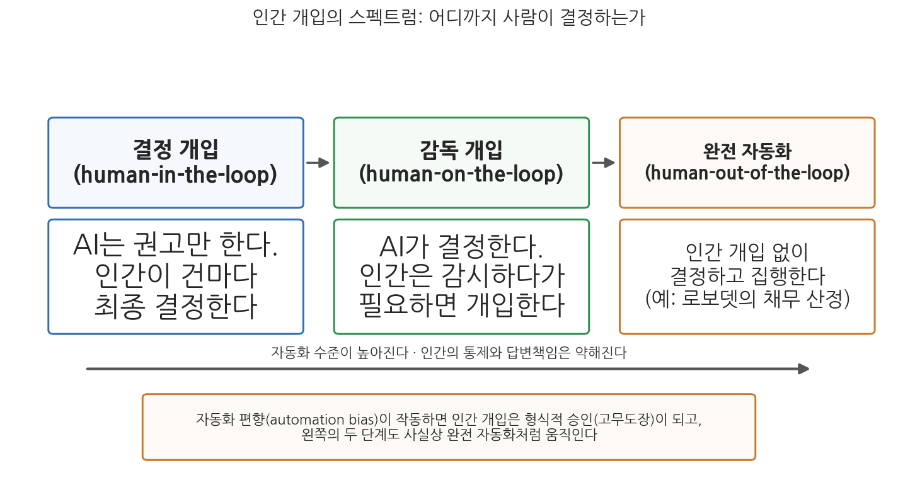

4주차 1차시. AI와 책임성 (1): 책임성의 도전
책임성이란 행위자와 포럼 사이의 관계다. 행위자는 자신의 행동을 설명하고 정당화할 의무를 지고, 포럼은 질문을 던지고 판단을 내릴 수 있으며, 행위자는 그 결과를 감수해야 한다. (마크 보번스, 「개념적 틀로서의 공적 책임성」, 2007)
이 장에서 배우는 것
2013년 10월, 미국 미시간주는 실업급여 부정수급을 잡아내는 전산 시스템 MiDAS를 가동했다. 시스템은 사람의 검토 없이 스스로 "사기"를 판정하고, 급여 환수와 네 배의 벌금을 부과했다. 2년 동안 약 4만 명이 사기꾼으로 지목되었는데, 뒤늦은 재검토 결과 자동 판정의 93%가 오류였다. 임금이 압류되고 세금 환급이 가로채였으며 파산에 이른 사람도 있었다. 그런데 여기서 행정학의 오래된 질문이 새 얼굴로 돌아온다. 이 대량의 잘못된 처분에 대해, 누가 답해야 하는가. 판정을 내린 것은 사람이 아니라 시스템이다. 시스템을 만든 것은 외부 개발업체다. 도입을 결정한 것은 주 정부 기관이고, 그 기관을 감독하는 것은 주지사와 의회다. 모두가 조금씩 관여했지만, "내가 그 결정을 내렸다"고 말할 사람은 어디에도 없다.
3주차에서 우리는 AI가 만드는 불투명성, 곧 "왜 그런 결정이 나왔는지 알기 어렵다"는 문제를 보았다. 이번 주는 그 다음 질문이다. 결정이 잘못되었을 때 "누가 책임지는가"이다. 책임성(accountability)은 민주주의 행정의 마지막 안전판이다. 권한을 위임받은 자는 위임한 자에게 설명하고, 잘못이 드러나면 시정하고 제재받는다. 이 사슬이 있기에 국민은 얼굴도 모르는 관료에게 권력을 맡길 수 있다. 그런데 AI와 알고리즘이 결정의 자리에 들어오면 이 사슬의 고리 하나하나가 흔들린다. 이 장은 그 흔들림의 구조를 해부하고, 다음 차시(4주차 2차시)에서 그 대응, 곧 책임의 배분과 제도를 다룬다. 구체적으로 다음을 배운다.
- 행정가치로서 책임성: 책임성(accountability)과 책임(responsibility)의 구별, 프리드리히-파이너 논쟁
- AI 의사결정이 만드는 책임 공백(responsibility gap)의 구조
- 책임 추적을 어렵게 하는 두 문제: 많은 손(many hands)과 많은 것들(many things)
- 인간 개입(human-in-the-loop)의 논리, 그리고 그 한계로서의 자동화 편향(automation bias)
이 장은 하나의 질문을 따라 전개된다. "기계가 내린 결정이 잘못되었을 때, 누가 답해야 하는가?"
1.1 행정가치로서 책임성의 학술 체계를 세운다 (책임성과 책임의 구별, 프리드리히-파이너 논쟁, 연관 개념들) → 1.2 AI가 이 체계에 내는 균열, 곧 책임 공백을 본다 → 1.3 공백이 생기는 구조적 이유를 많은 손과 많은 것들의 문제로 해부한다 → 1.4 가장 널리 쓰이는 처방인 인간 개입의 논리를 살피고, 자동화 편향이라는 한계를 따진다.
1.1 행정가치로서 책임성: 누구에게, 무엇을 답하는가
책임성과 책임: 닮았지만 다른 두 개념
한국어의 "책임"은 하나의 단어지만, 행정학은 두 개념을 구별한다. 책임성(accountability)과 책임(responsibility)이다. 책임성은 공직자가 자신의 행위에 대해 감독기관이나 국민에게 설명하고 정당화하는 의무를 가리키며, 권한에 대한 외부적 견제를 뜻한다(Bovens, 2007). 이 장 첫머리의 인용구가 그 고전적 정의다. 설명할 의무를 지는 행위자(actor)가 있고, 질문하고 판단하는 포럼(forum)이 있으며, 판단에는 결과(제재나 시정)가 따른다. 국정감사장에 선 장관, 감사원 감사를 받는 기관장, 언론 앞에서 해명하는 대변인이 모두 이 관계 속에 있다.
반면 책임은 공직자가 내적으로 부담하는 의무나 윤리적 책무감을 뜻한다. 명령이나 규정을 따르는 것을 넘어서는 내적 판단과 전문직 윤리를 포함한다(Jackson, 2009). 아무도 보지 않아도 정직하게 일하고, 지시가 없어도 시민의 처지를 헤아려 재량을 행사하는 태도가 여기에 속한다. 요컨대 책임성은 외부에 대한 답변과 통제의 개념이고, 책임은 내부의 직업윤리와 의무감의 개념이다.
책임성은 공직자·기관이 자신의 행위를 외부의 포럼(상급자, 의회, 감사기관, 법원, 국민)에게 설명하고 정당화하며, 그 판단에 따라 제재나 시정을 감수하는 외부적 견제의 관계다(Bovens, 2007). 책임은 공직자가 공익과 양심에 비추어 스스로 옳게 행동하려는 내면적 의무감이다(Jackson, 2009). 전자가 "누구에게 답하는가"의 문제라면, 후자는 "무엇을 위해 행동하는가"의 문제다.
프리드리히-파이너 논쟁: 외부 통제인가, 내면 윤리인가
이 구별은 1940년대의 유명한 논쟁에서 이미 정식화되었다. 파이너(Herman Finer)는 민주적 통제를 위해 관료제에 엄격한 외재적 책임성을 확보해야 한다고 주장했다. 관료는 상급자와 선출직의 명령에 복종하고 규칙을 따라야 하며, 책임성이란 결국 "누구에게(to whom)" 지는 것이라는 견해다(Finer, 1941). 반면 프리드리히(Carl J. Friedrich)는 행정인이 전문가로서 재량을 발휘하여 공공선을 추구하는 내재적 책임, 곧 개인적 양심과 전문적 판단에 따른 의무 수행이 중요하다고 보았다. 책임은 "무엇에 대해(for what)" 지는 것이다(Friedrich, 1940).
논쟁의 핵심 통찰은 두 책임이 항상 일치하지는 않는다는 데 있다. 상부의 지시와 법규를 충실히 따르는 것(파이너의 책임성)이 시민에 대한 궁극적 책임(프리드리히의 책임)과 충돌할 수 있다. 뒤에서 보겠지만, 이 오래된 긴장은 AI 시대에 정확히 되살아난다. 시스템이 시키는 대로 처리하는 공무원은 파이너식 책임성의 외양을 갖추지만, 시스템의 오류를 의심하고 바로잡을 프리드리히식 책임은 잃어버릴 수 있기 때문이다.
프리드리히-파이너 논쟁의 무대는 뉴딜기의 팽창하는 행정국가였다. 관료의 재량이 커지자 "규칙과 명령으로 묶을 것인가(파이너), 전문직 윤리에 맡길 것인가(프리드리히)"가 문제가 되었다. AI는 이 무대를 뒤집는다. 알고리즘이 재량을 흡수하면 일선 공무원의 판단 여지가 줄어드는데, 이는 언뜻 파이너의 승리처럼 보인다. 규칙(코드)이 사람을 완전히 통제하게 되었기 때문이다. 그러나 규칙을 짠 것은 의회도 상급자도 아닌 개발자와 데이터이고, 그 내용은 3주차에서 본 것처럼 불투명하다. 외부 통제의 대상이 사라지는 순간 파이너식 책임성도 공전한다. 결국 남는 방어선은 시스템의 산출을 의심할 줄 아는 공무원의 내면적 책임, 곧 프리드리히의 유산이다. 두 시각 모두 AI 시대에 다시 소환되는 이유다.
책임성의 여러 얼굴: 다차원 개념으로서의 책임성
현대 행정학은 책임성을 하나의 잣대가 아니라 다양한 기제로 관료를 통제하는 다차원적 개념으로 이해한다. 보번스는 책임성을 반응성, 책임감, 청렴성, 효과성, 효율성, 형평성, 투명성 같은 특징들과 이어지는 폭넓은 개념으로 정의했다(Bovens, 2007). 책임을 지우는 포럼이 누구냐에 따라 정치적 책임성(의회·선출직), 법적 책임성(법원), 행정적 책임성(감사기관·상급기관), 전문가적 책임성(동료 전문가 집단), 사회적 책임성(시민사회·언론)으로 나누기도 한다. 국내 연구도 책임성을 단일 개념이 아니라 행정이론의 관점에 따라 강조점이 달라지는 복합 개념으로 정리해 왔다(엄석진, 2009).
책임성은 또한 몇 가지 연관 개념들로 구체화된다. 이 개념들은 다음 차시까지 이어질 논의의 공구함이므로 눈에 익혀 두자.
- 답변책임(answerability). 공직자가 자신의 결정과 행동에 대해 설명하고 근거를 제시할 의무. 책임성의 정보 제공 측면이다. 국정감사, 감사원 감사, 연차보고서, 공청회가 관료에게 "무엇을 했고, 왜 그렇게 했는가"를 밝히도록 요구하는 장치들이다. 답변책임이 확보되어야 책임질 주체가 분명해지고, 확보되지 않으면 권력은 불투명해지고 통제가 어려워진다.
- 투명성(transparency). 정부 운영이 개방적이고 접근 가능한 상태. 3주차에서 자세히 보았듯 의사결정 과정이 투명해야 이해관계자가 권한 행사의 공정성을 확인할 수 있으므로, 투명성과 책임성은 불가분의 관계다.
- 윤리적 의무(ethical obligation). 청렴성과 공익을 지킬 책무로, 책임 개념의 내면적·규범적 측면이다. 윤리 기준 위반(부패, 권한남용, 태만)이 발생하면 책임성 기제가 작동하여 해명 요구, 책임 추궁, 시정 조치가 따른다.
- 반응성(responsiveness). 행정이 시민의 요구와 의견에 대응하는 정도. 다만 시민에게 반응하는 것과 상급자의 명령·법규를 따르는 것 사이에서 균형을 잡아야 하는 딜레마를 수반한다.
- 성과에 대한 책임(accountability for results). 절차 준수를 넘어 국민이 체감할 성과를 내는 것에 대한 책임으로, 신공공관리(NPM) 개혁의 핵심이었다(Van de Walle & Hammerschmid, 2011). 다만 성과지표만 좇으면 목표대치가 일어나고 측정되지 않는 가치(형평성, 윤리성)를 소홀히 할 위험이 있다. 2주차에서 본 효율 중심 도입의 함정과 같은 구조다.
표 4-1. 책임성과 책임의 비교
| 측면 | 책임성 (accountability) | 책임 (responsibility) |
|---|---|---|
| 핵심 정의 | 외부 포럼에 행위를 설명·정당화할 의무 | 공익과 도덕 기준을 지킬 개인적 의무감 |
| 강조점 | 외부의 감독과 통제 (법령 준수, 지시 이행) | 내부의 도덕적 판단과 전문성 |
| 고전적 시각 | 파이너(1941): 위계적 통제 중시 | 프리드리히(1940): 윤리적 자율성 중시 |
| 방향 | 누구에게(to whom) 답하는가 | 무엇에 대해(for what) 행동하는가 |
| 현대적 기제 | 국정감사, 회계감사, 성과평가, 법적 규제 | 윤리강령, 전문직 규범, 조직문화 |
| 실패 시 | 제재와 시정의 구조가 작동 | 양심과 자기통제의 문제로 남음 |
이 공구함을 들고 이제 본론으로 들어가자. AI와 알고리즘 기반 의사결정은 이 체계의 어디를 흔드는가.
1.2 AI 의사결정과 책임 공백
시스템 수준 관료제: 결정하는 자가 사라진다
보번스와 자우리디스는 일찍이 정보기술이 관료제의 성격 자체를 바꾼다고 지적했다. 민원 창구에서 재량을 행사하던 길거리 수준 관료제(street-level bureaucracy)가, 결정 규칙이 소프트웨어에 내장되어 자동으로 집행되는 시스템 수준 관료제(system-level bureaucracy)로 대체된다는 것이다(Bovens and Zouridis, 2002). 세금 고지, 수당 지급, 과태료 부과처럼 대량·반복적인 처분일수록 이 전환이 빠르다. 문제는 이때 전통적인 책임성의 사슬이 흐려진다는 데 있다. 담당 공무원이 기관장에게, 기관장이 장관에게, 장관이 의회와 국민에게 설명하는 위계의 사슬은 "결정을 내린 사람"이 있음을 전제하는데, 시스템 수준 관료제에서는 그 사람이 없거나, 있어도 결정의 내용을 스스로 설명하지 못한다.
여기에 3주차에서 본 불투명성이 겹친다. 행정인은 본래 자신이 내린 결정에 대해 설명하고 정당화해야 하지만, 기계학습 기반 시스템의 판단 근거를 제대로 설명할 수 없다면 답변책임을 다할 수 없다. 답변책임은 1.1절에서 본 대로 책임성의 정보 제공 측면이자 출발점이다. 출발점이 막히면 그 뒤의 판단, 제재, 시정도 연쇄적으로 막힌다.
책임 공백: 모두의 기여, 누구의 책임도 아닌
그렇다면 자동화 시스템이 편향되거나 오류가 있는 결정을 내렸을 때, 그 책임은 누구에게 있는가. 소프트웨어를 만든 개발자인가, 도구를 채택한 기관인가, 그것을 사용한 개별 공무원인가. 이 물음에 아무도 온전히 답할 수 없는 상태를 책임 공백(responsibility gap)이라 부른다. 마티아스는 학습하는 기계의 등장으로 이 공백이 원리적으로 발생한다고 논증했다(Matthias, 2004). 전통적으로 어떤 사람에게 책임을 물으려면 두 조건이 필요하다. 그가 행위를 통제할 수 있었고(통제 조건), 무슨 일이 일어나는지 알 수 있었어야(인식 조건) 한다. 그런데 학습 시스템은 개발자가 배포한 뒤에도 데이터를 통해 행동을 바꾸므로 개발자의 통제를 벗어나고, 그 내부 작동은 사용자가 알기 어려우므로 인식 조건도 채워지지 않는다. 만든 자도, 쓰는 자도, 두 조건을 온전히 충족하지 못한다.

그림 4-1을 읽는 법은 이렇다. 왼쪽은 전통적 행정의 책임 사슬이다. 담당 공무원에서 기관장, 장관, 의회·국민으로 설명·정당화의 의무가 위로 이어지고, 어느 단계에서든 "누가 결정했는가"를 짚을 수 있다. 오른쪽은 AI가 개입한 행정이다. 잘못된 자동화 결정 하나에 개발업체, 데이터 관리자, 도입을 결정한 기관, 운영하는 공무원이라는 여러 손과, 학습데이터, 모델, 연동 시스템이라는 여러 사물이 동시에 기여한다. 이 그림에서 알 수 있는 것은 두 가지다. 첫째, 공백은 누군가의 악의가 아니라 기여의 구조에서 생긴다. 둘째, 화살표가 모여드는 가운데 상자, 곧 "누가 답해야 하는가"라는 물음 자체가 새로운 행정 문제가 된다.
책임 공백은 두 방향으로 책임의 체계를 침식한다. 외부적으로는 어느 개인이나 기관도 명확히 책임지지 않는 회색지대를 만들어 책임성(accountability)을 약화시키고, 내부적으로는 인간 담당자가 AI의 결정에 의존하면서 자신의 판단과 윤리적 의무를 소홀히 하게 만들어 책임(responsibility)을 약화시킨다. 커밍스는 자동화가 인간과 결정 결과 사이에 심리적 거리를 만들어 도덕적 부담을 덜어 주는 도덕적 완충(moral buffer) 효과를 낳는다고 분석했고(Cummings, 2006), 부수이옥은 알고리즘 시스템이 "우리의 비판적 판단을 유보시키고 산출물에 질문을 던지는 경향마저 줄여 버릴 위험"이 있다고 경고했다(Busuioc, 2021). 요컨대 AI는 파이너의 책임성 측면과 프리드리히의 책임 측면 모두에 타격을 준다.
실제 사례를 보자. 이 장의 도입에서 만난 미시간주의 이야기다.
미시간주 실업보험청은 2013년 10월 부정수급 적발 시스템 MiDAS(Michigan Integrated Data Automated System)를 도입하면서 담당 인력을 대폭 줄이고 판정을 자동화했다. 시스템은 고용주 신고와 수급자 신고 사이에 사소한 불일치만 있어도 사람의 검토 없이 "사기"로 판정하고, 급여 환수에 네 배의 벌금을 얹어 부과했으며, 이의제기 기한이 지나면 임금 압류와 세금 환급 가로채기로 징수했다. 2013-2015년 사이 약 4만 명이 사기 판정을 받았는데, 이는 예년의 다섯 배 수준이었다. 논란이 커지자 주 정부가 자동 판정 건을 재검토한 결과 93%가 오류로 드러났다. 피해자들이 제기한 집단소송(Bauserman v. Michigan UIA)은 9년을 끌었고, 2022년 10월 주 법무장관이 화해에 합의했으며, 2024년 1월 법원의 최종 승인으로 약 3,000명의 원고가 2,000만 달러의 배상을 받으면서 종결되었다(미시간대 STPP 정책브리프, 2024).
이 사례가 보여 주는 것은 책임 공백의 실제 작동이다. 첫째, 오류는 개인의 일탈이 아니라 설계에서 나왔다. "불일치는 곧 사기"라는 단순한 규칙, 검토 인력의 감축, 자동 집행의 결합이 4만 건의 오판을 만들었다. 둘째, 책임 추궁은 형사도 징계도 아닌 민사 배상으로, 그것도 9년이 걸려서야 이루어졌다. 잘못을 "저지른 사람"을 특정할 수 없으니 남는 것은 기관을 상대로 한 소송뿐이었다. 셋째, 배상 주체는 결국 주 정부, 곧 납세자였다. 시스템을 설계한 업체도, 도입을 결정한 관리자도, 판정을 방치한 담당자도 개인으로서 책임지지 않았다. 공백은 이렇게 피해자에게는 긴 구제의 지연으로, 조직에게는 학습 실패로 남는다.
1.3 많은 손과 많은 것들: 공백은 왜 구조적인가
많은 손의 문제: 오래된 난제
책임 공백이 AI만의 문제는 아니라는 점을 먼저 짚어 두자. 톰슨은 이미 1980년에 많은 손의 문제(problem of many hands)를 정식화했다. 현대 정부의 결정은 수많은 공직자의 손을 거쳐 만들어지므로, 결과에 대해 도덕적 책임을 물을 단일한 개인을 찾기 어렵다는 것이다(Thompson, 1980). 정책 실패의 청문회가 흔히 "실무자는 지시를 따랐고, 결정권자는 보고받지 못했다"는 공방으로 흐르는 이유가 이것이다. 니센바움은 이 문제가 전산화된 사회에서 더 심해진다고 보았다. 소프트웨어는 여러 조직의 여러 팀이 만들고, 버그는 불가피한 것으로 취급되며, 컴퓨터가 편리한 희생양이 되고, 소유자는 이익은 챙기되 배상책임은 회피한다. 책임성을 잠식하는 네 개의 장벽이다(Nissenbaum, 1996).
많은 것들의 문제: AI가 더한 층
AI는 여기에 새로운 층을 더한다. 쿠켈버그는 AI의 책임 귀속을 어렵게 하는 것이 많은 손만이 아니라 많은 것들(many things)이기도 하다고 지적했다(Coeckelbergh, 2020). 하나의 AI 시스템은 학습데이터, 사전학습 모델, 오픈소스 라이브러리, 외부 클라우드 서비스, 다른 기관의 데이터베이스처럼 수많은 기술적 구성요소가 얽혀 만들어지고, 각 구성요소가 결과에 인과적으로 기여한다. 사람의 손을 따라가는 것도 어려운데, 이제는 사물의 연쇄까지 따라가야 하는 것이다. 재범 위험 예측 알고리즘 COMPAS의 인종 편향 논란(2016년 프로퍼블리카 보도)에서 편향의 원천이 모델인지, 학습에 쓰인 과거 체포 기록인지, 그 기록을 낳은 경찰 활동의 패턴인지를 두고 논쟁이 갈렸던 것이 전형적인 예다. 편향의 원천을 어디로 보느냐에 따라 책임져야 할 주체가 완전히 달라진다(이 사례는 5주차 형평성에서 자세히 다룬다).
많은 손과 많은 것들이 결합하면 책임 추적은 곱절로 어려워진다. 개발업체는 "기관이 제공한 데이터의 문제"라 하고, 기관은 "업체가 만든 모델의 문제"라 하며, 일선 공무원은 "시스템이 시키는 대로 했을 뿐"이라 한다. 각자의 말이 부분적으로는 사실이라는 점이 이 문제의 고약함이다. 다음 사례는 AI 이전의 자동화 시스템에서 이 구조가 얼마나 파괴적으로 작동했는지, 그리고 책임 규명이 얼마나 오래 걸리는지를 보여 주는 선례다.
영국 우체국은 1999년부터 후지쓰가 개발한 회계 시스템 호라이즌(Horizon)을 전국 지점에 도입했다. 시스템 결함으로 장부에 존재하지 않는 손실이 찍혔지만, 우체국은 시스템을 신뢰하고 지점장들을 의심했다. 1999-2015년 사이 약 1,000명의 지점장이 횡령·회계부정 혐의로 기소되었고, 수백 명이 유죄판결을 받았으며, 감옥에 가거나 파산했고, 조사위원회가 확인한 것만 최소 13명이 스스로 목숨을 끊었다. 2019년 민사소송에서 시스템 결함이 인정되었고, 2021년 항소법원이 유죄판결을 뒤집기 시작했으며, 2024년에는 관련 유죄판결을 일괄 무효화하는 특별법이 제정되었다. 2025년 7월 공식 조사위원회(위원장 윈 윌리엄스 경)는 최종보고서 1권에서 후지쓰 직원들이 도입 전부터 시스템이 허위 데이터를 만들 수 있음을 알았고, 우체국과 후지쓰 경영진이 결함을 알았거나 알았어야 했다고 결론지었다. 그러나 보고서 발간 시점까지 우체국이나 후지쓰의 어느 개인도 법적 책임을 지지 않았으며, 시스템 실패와 책임 소재를 다룰 2권은 2026년 7월 현재 아직 발간되지 않았다(Post Office Horizon IT Inquiry, 2025).
이 사례가 보여 주는 것은 세 가지다. 첫째, 호라이즌은 기계학습 기반 AI가 아니라 재래식 전산 시스템이었다. 많은 손의 문제는 자동화 일반의 문제이며, AI는 여기에 많은 것들의 층을 더해 문제를 심화시킬 뿐이라는 점을 확인해 준다. 둘째, "시스템은 틀리지 않는다"는 조직적 믿음이 책임의 방향을 뒤집었다. 시스템의 오류를 의심하는 대신 사람을 처벌한 것이다. 이는 다음 절에서 볼 자동화 편향의 조직 버전이다. 셋째, 개발업체(후지쓰), 운영기관(우체국), 기소 권한을 쥔 조직, 감독 부처가 얽힌 구조에서 책임 규명에 사반세기가 걸렸고 아직 끝나지 않았다. 책임 공백은 시간의 문제이기도 하다. 공백이 길어지는 동안 피해는 복구 불가능해진다.
1.4 인간 개입의 논리와 한계
인간을 고리 안에: human-in-the-loop의 논리
책임 공백에 대한 가장 직관적이고 널리 채택된 처방은 인간을 결정의 고리 안에 남겨 두는 것, 곧 인간 개입(human-in-the-loop)이다. 각국의 공공부문 AI 지침들은 AI 도구가 인간 결정자를 보조하는 역할에 머물러야 한다고 강조한다. 최종 결정에 인간 공직자가 관여하도록 하고 AI를 참고자료나 권고 시스템으로 활용한다는 것이다. 논리는 명쾌하다. 책임성의 주체가 인간으로 남아야, 설명을 요구받고 평가받을 존재가 공무원이어야, 1.1절에서 본 책임성의 체계 전체가 작동할 수 있기 때문이다. 미국 식품의약국(FDA)처럼 AI 거버넌스 보드를 두어 도입 전 검토와 운영 중 모니터링이라는 추가적인 인간 감독의 층을 마련한 기관도 있다. "AI가 결정을 돕지만 궁극적 책임은 인간에게 있다"는 원칙이다.
인간 개입은 정도의 문제이기도 하다. 그림 4-2가 그 스펙트럼이다.

그림 4-2를 읽는 법은 이렇다. 왼쪽부터 결정 개입(human-in-the-loop, AI는 권고만 하고 인간이 건마다 최종 결정), 감독 개입(human-on-the-loop, AI가 결정하되 인간이 감시하다 개입), 완전 자동화(human-out-of-the-loop, 인간 개입 없이 결정·집행)의 세 단계가 있고, 오른쪽으로 갈수록 자동화 수준은 높아지고 인간의 통제와 답변책임은 약해진다. 이 그림에서 알 수 있는 것은 두 가지다. 첫째, "인간 개입"은 하나의 상태가 아니라 설계상의 선택지들이며, 어떤 업무를 어느 단계에 둘 것인가가 제도 설계의 핵심 결정이 된다(다음 차시에서 다룬다). 둘째, 맨 아래 경고 상자가 말하듯 자동화 편향이 작동하면 왼쪽의 두 단계도 사실상 오른쪽처럼 움직인다. 이것이 이 절 후반의 주제다.
법제도 이 스펙트럼 위에 세워지고 있다. EU AI Act(인공지능법)는 고위험 AI 시스템에 효과적인 인간 감독(human oversight)을 설계 단계부터 보장할 것을 요구하고(제14조), 감독하는 인간이 자동화 편향의 위험을 인식하도록 해야 한다고 명시한다. 한국의 행정기본법 제20조는 완전히 자동화된 시스템에 의한 처분을 법률로 정하는 경우에만, 그리고 재량이 있는 처분이 아닌 경우에만 허용한다. 재량 판단이 필요한 곳에는 인간이 남아 있어야 한다는 취지다.
자동화 편향: 고리 안의 인간은 정말 결정하는가
그러나 인간을 고리 안에 두는 것과 인간이 실제로 판단하는 것은 다른 문제다. 심리학 연구들은 사람들이 자동화된 시스템의 권고를 과도하게 신뢰하여, 시스템이 틀렸을 때조차 이를 따르는 경향을 일관되게 확인해 왔다. 자동화 편향(automation bias)이다(Skitka, Mosier and Burdick, 1999). 모의 비행 실험에서 자동화 시스템의 잘못된 지시를 받은 참가자들은 다른 계기가 정상임을 보여 주는데도 시스템을 따랐다. 행정 맥락으로 옮기면, 심사 화면에 뜬 "위험 점수 87점" 앞에서 공무원이 자신의 상반된 판단을 접고 점수를 따라가는 상황이다.
공무원이 컴퓨터의 결정을 지나치게 신뢰하여 그대로 받아들이고, 잘못된 결과를 의심하거나 수정하려는 책임 의식이 마비된다면 이는 심각한 책임성 문제를 초래한다. AI 의사결정의 권위가 강해질수록 이 위험은 커진다. 인간이 AI에게 판단을 넘겨 버리고 이의를 제기하지 않게 되면, 재량에 기반한 책임 있는 결정이라는 행정의 근본 개념이 훼손되는 것이다. 이때 인간 개입은 형식만 남는다. 결재란에 도장은 찍히지만 판단은 없는, 고무도장(rubber stamp)이다.
형식화된 인간 개입은 책임 공백을 메우기는커녕 공백을 가리는 장치가 될 수 있다. 엘리시는 자동화 시스템의 사고에서 시스템을 설계·운영한 조직 대신 가장 가까이 있던 인간 운용자가 책임을 뒤집어쓰는 현상을 도덕적 크럼플 존(moral crumple zone)이라 불렀다(Elish, 2019). 자동차의 크럼플 존이 충격을 흡수하듯, 말단의 인간이 조직과 기술의 실패가 낳은 비난을 흡수한다는 것이다. "최종 결정은 인간이 했다"는 형식이 갖춰져 있으면, 시스템의 결함과 도입 결정의 잘못은 심사되지 않은 채 서명한 담당자만 문책될 수 있다. 인간 개입 요건은 실질적 검토가 가능한 조건(시간, 정보, 이의제기 권한, 교육)과 함께 설계될 때만 책임성 장치가 된다. 조건 없는 인간 개입 요건은 오히려 책임을 말단으로 흘려보내는 배수로가 된다.
인간을 지운 자동화의 끝: 로보뎃
인간 개입의 반대편 극단, 곧 인간을 고리에서 아예 들어낸 완전 자동화가 대규모 행정에서 어떤 결과를 낳는지를 보여 주는 대표 사례가 호주의 로보뎃이다.
호주 정부는 2015년부터 복지급여 과지급을 회수하는 부채 산정을 자동화했다. 시스템은 국세청의 연간 소득 자료를 2주 단위로 평균 내어(소득 평균화) 수급 기간의 소득을 추정했고, 추정치가 신고액과 다르면 채무를 통지했다. 종전에는 공무원이 고용주 확인 등으로 실제 소득을 검증했지만, 자동화와 함께 이 인간 검토 단계가 제거되었고 입증 부담은 수급자에게 넘어갔다. 불규칙하게 일하는 저소득층일수록 연평균과 실제 격주 소득의 차이가 커서 허위 채무가 양산되었다. 2019년 11월 연방법원이 소득 평균화에 기반한 채무 산정을 위법으로 판단했고, 정부는 2020년 5월 제도를 중단하고 환급을 발표했다. 2021년 6월 연방법원은 총 18억 호주달러 규모(부당 징수 환급 7억 5,100만 달러 포함)의 집단소송 화해를 승인했는데, 잘못 산정된 채무는 약 47만 건에 달했다. 2023년 7월 왕립조사위원회는 최종보고서에서 이 제도를 "조잡하고 잔인한 장치로서 공정하지도 합법적이지도 않았다"고 결론지었다(Royal Commission into the Robodebt Scheme, 2023).
이 사례가 보여 주는 것은 완전 자동화가 단지 기술적 선택이 아니라 책임 구조의 선택이라는 점이다. 인간 검토의 제거는 비용 절감이자 동시에, 개별 사건에서 "이 채무가 정말 맞는가"를 물을 마지막 사람을 없애는 결정이었다. 오류를 걸러 낼 안전판이 사라지자 위법한 산정 방식이 4년 동안 47만 건의 규모로 증폭되었다. 그리고 공백의 대가는 여기서도 비대칭적이었다. 피해자들은 채무 통지 앞에서 스스로 무죄를 입증해야 했지만, 제도를 설계하고 승인하고 방치한 사람들의 책임은 왕립조사위원회가 꾸려질 때까지 규명되지 않았다. 그 규명의 경과, 곧 12명의 공무원에 대한 행위규범 조사와 2026년 3월에야 나온 반부패위원회의 최종 판정은 다음 차시의 첫 사례로 이어진다.
이 장의 논의를 정리하면 이렇다. 책임성은 결정한 자가 답하는 체계인데, AI는 "결정한 자"를 흩어 놓는다(많은 손과 많은 것들). 가장 널리 쓰이는 처방인 인간 개입은 필요하지만, 자동화 편향과 형식화의 위험 때문에 그 자체로는 충분하지 않다. 그렇다면 흩어진 책임을 어떻게 다시 모아 배분할 것인가. 감사와 이의제기 같은 제도는 어떻게 설계해야 하는가. 이것이 다음 차시의 과제다.
요약
행정가치로서 책임성(accountability)은 공직자가 외부의 포럼에 자신의 행위를 설명·정당화하고 판단과 제재를 감수하는 관계이며(Bovens, 2007), 내면의 윤리적 의무감인 책임(responsibility)과 구별된다(Jackson, 2009). 외부 통제를 강조한 파이너와 내재적 전문직 윤리를 강조한 프리드리히의 1940년대 논쟁은 두 개념의 긴장을 정식화했고, 답변책임·투명성·윤리적 의무·반응성·성과책임 같은 연관 개념들이 이 체계를 구체화한다. AI와 알고리즘 의사결정은 이 체계에 책임 공백을 만든다. 결정 규칙이 소프트웨어에 내장되는 시스템 수준 관료제에서는 결정을 설명할 사람이 사라지고(Bovens and Zouridis, 2002), 학습하는 시스템은 통제 조건과 인식 조건을 모두 흔들어 책임 귀속을 어렵게 한다(Matthias, 2004). 공백의 구조적 원인은 결정에 기여하는 사람이 너무 많다는 많은 손의 문제(Thompson, 1980)에 더해, 데이터·모델·연동 시스템 등 기여하는 사물이 너무 많다는 많은 것들의 문제(Coeckelbergh, 2020)다. 미시간 MiDAS의 93% 오판과 9년의 소송, 영국 호라이즌의 26년째 진행 중인 책임 규명이 그 실제 모습이다. 처방으로 널리 채택된 인간 개입은 책임 주체를 인간으로 남겨 두려는 논리이지만, 인간이 시스템의 권고를 무비판적으로 따르는 자동화 편향(Skitka, Mosier and Burdick, 1999)과 도덕적 완충(Cummings, 2006) 탓에 형식적 승인으로 전락할 수 있으며, 이때는 오히려 말단 공무원이 책임을 뒤집어쓰는 도덕적 크럼플 존이 생긴다(Elish, 2019). 호주 로보뎃은 인간 검토의 제거가 47만 건의 위법한 채무 산정으로 증폭된 사례로, 자동화의 수준이 곧 책임 구조의 선택임을 보여 준다.
토론·복습 문제
4-1. (서술형 연습) 책임성(accountability)과 책임(responsibility)의 개념을 구별하여 설명하고, AI 기반 의사결정이 두 개념 각각을 어떻게 약화시키는지 책임 공백, 자동화 편향, 도덕적 완충 개념을 사용하여 논술하시오.
4-2. (찬반 토론) "과태료 부과나 수당 지급 같은 대량·반복적 행정처분은 인간 검토 없는 완전 자동화를 허용해야 한다"는 주장에 대해 찬성과 반대의 논거를 각각 제시하고 자신의 입장을 밝히시오. 찬성 측은 효율성과 일관성(2주차)을, 반대 측은 미시간 MiDAS와 호주 로보뎃의 경험을 논거로 활용해 보시오.
4-3. 많은 손의 문제(Thompson, 1980)는 AI 이전부터 존재했다. 그렇다면 AI는 이 오래된 문제를 정도만 심화시키는가, 아니면 질적으로 새로운 문제(많은 것들, 학습에 따른 통제 조건의 붕괴)를 만드는가. 영국 호라이즌 사례(AI 아닌 자동화)와 비교하여 자신의 견해를 논하시오.
4-4. 여러분이 어느 지방자치단체의 복지급여 담당 공무원이고, 부정수급 위험 점수를 제시하는 AI 시스템이 도입되었다고 하자. 인간 개입이 고무도장으로 전락하지 않기 위해 여러분 자신과 조직에 필요한 조건(시간, 정보, 권한, 교육 등)을 구체적으로 설계해 보시오.